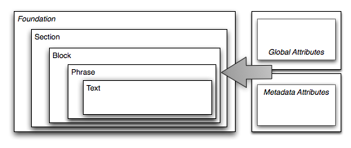
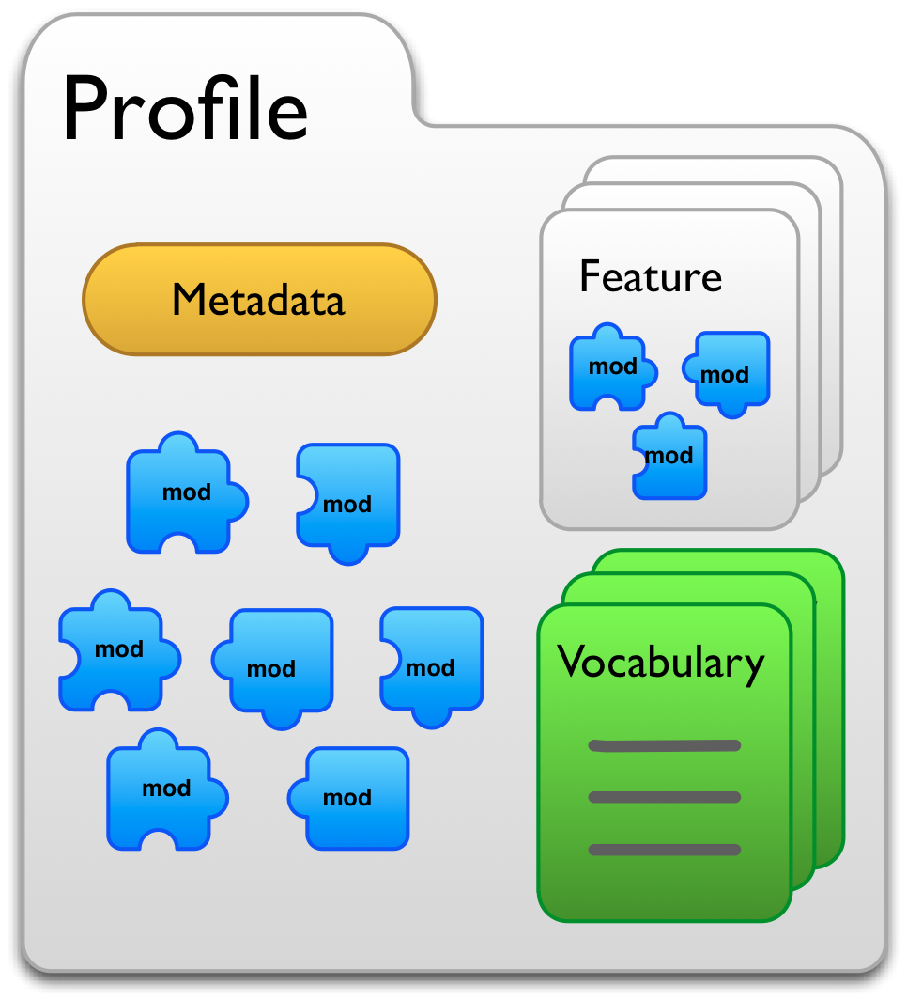

DAISY Authoring and Interchange
NISO Z39.98-2012: Authoring and Interchange Framework for Adaptive XML Publishing Specification
February 17, 2011 - Romain Deltour
February 17, 2011 - Romain Deltour
↪ HTML + SMIL + NCC.HTML
↪ XML focus: DTBook XML, NCX, SMIL
↪ covers both distribution (Digital Talking Books) and authoring (DTBook XML)
↪ Part A. Authoring and Interchange
↪ Part B. Distribution (→ EPUB 3)
a framework in which to develop XML markup languages to represent different kinds of information resources, with the intent of producing documents suitable for transformation into different universally accessible formats
Framework vs Language
↪ 1 "meta specification" + several instances (called "profiles")
↪ books, newspapers, magazines, consumer medical info, conference proceedings, etc
Modularity and extensibility
↪ adapt quickly to new kinds of use, core layer of reusable modules
Semantics
↪ semantic inflections
↪ self-describing, based on RDFa
Data repurposing
↪ single source publishing
↪ converted into DAISY DTBs, EPUB, Braille, Large Print, HTML
DAISY AI specification (→ for profile developers)
Catalog of profiles (→ for markup authors)
↪ http://www.daisy.org/z3998/2012/auth/profiles/
<document xmlns="http://www.daisy.org/ns/z3998/authoring/" xml:lang="en">
<head>
<meta rel="z3998:profile" resource="http://www.daisy.org/z3998/2012/auth/profiles/genericdocument/1.0/">
<meta property="z3998:name" content="genericdocument"/>
<meta property="z3998:version" content="1.0"/>
</meta>
<meta rel="z3998:rdfa-context" resource="http://www.daisy.org/z3998/2012/vocab/context/default/"/>
<meta property="dc:identifier" content="daisy-z2011-exemplar-01" />
<meta property="dc:publisher" content="DAISY Consortium" />
<meta property="dc:date" content="2011-07-27T18:50:05Z" />
</head>
<body>
<h>Hello, world.</h>
</body>
</document>4 structure layers

the collection of resources that together define the rules and requirements for marking up an information resource
resource directory
Like profiles:
↪ required: identifier, publisher, date
<head>
…
<meta property="dc:identifier" content="daisy-z2012-exemplar-01" />
<meta property="dc:publisher" content="DAISY Consortium" />
<meta property="dc:date" content="2012-07-27T18:50:05Z"/>
…
</head><head>
…
<meta rel="z3998:meta-record" resource="http://www.example.com/meta/generator?rec=exemplar-01&format=marc21">
<meta property="z3998:meta-record-type" content="z3998:marc21-xml" />
</meta>
…
</head>↪ defined with RDFa attributes
<section>
<h property="dcterms:title">Ulysses: the condensed edition</h>
…
</section>Via the role attribute
<section role="chapter">…</section>Terms defined in RDF vocabularies
↪ declared in the "initial context"
<head>
<meta rel="z3998:rdfa-context" resource="http://www.daisy.org/z3998/2012/vocab/context/default/"/>
</head>↪ or declared with the prefix attribute
<document xml:lang="en" prefix="foaf: http://xmlns.com/foaf/0.1/">
…
</document><document xmlns="http://www.daisy.org/ns/z3998/authoring/"
xmlns:its="http://www.w3.org/2005/11/its" xml:lang="en">
<head>
<meta rel="z3998:profile" resource="http://www.daisy.org/z3998/2012/auth/profiles/book/1.0/">
<meta property="z3998:name" content="book"/>
<meta property="z3998:version" content="1.0"/>
</meta>
<meta rel="z3998:feature" resource="http://example.org/z3998/2012/auth/features/ssml/1.0/">
<meta property="name" content="ssml" />
<meta property="version" content="1.0" />
</meta>
<meta rel="z3998:rdfa-context" resource="http://www.daisy.org/z3998/2012/vocab/context/default/"/>
<meta property="dc:identifier" content="daisy-z2011-book-001" />
<meta property="dc:publisher" content="DAISY Consortium" />
<meta property="dc:date" content="2011-07-27T18:50:05Z" />
</head>
<body>
<frontmatter>
<section>
<h property="dcterms:title">Ulysses: the condensed edition</h>
<pagebreak xml:id="pR1" value="i" />
</section>
<toc>
<h>Table of contents</h>
<entry>
Chapter 1 <ref ref="p1">1</ref>
</entry>
…
<pagebreak xml:id="pR2" value="ii" />
</toc>
</frontmatter>
<bodymatter>
<section role="chapter">
<pagebreak xml:id="p1" value="1" />
<h>Chapter 1</h>
<p> Stately, plump Buck Mulligan came from the stairhead, bearing a bowl of lather on which a mirror and a razor lay crossed. He held the bowl aloft and intoned:
<quote xml:lang="la" its:translate="no" ssml:ph="…">INTROIBO AD ALTARE DEI.</quote>
</p>
<pagebreak value="2" />
</section>
…
</bodymatter>
</body>
</document>validation
↪ schema-based only at the moment
/
#